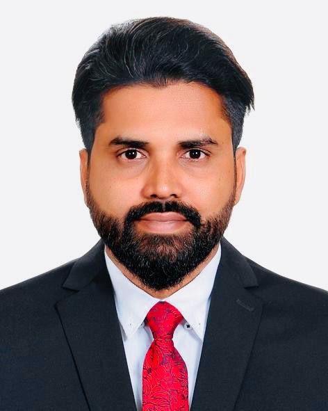
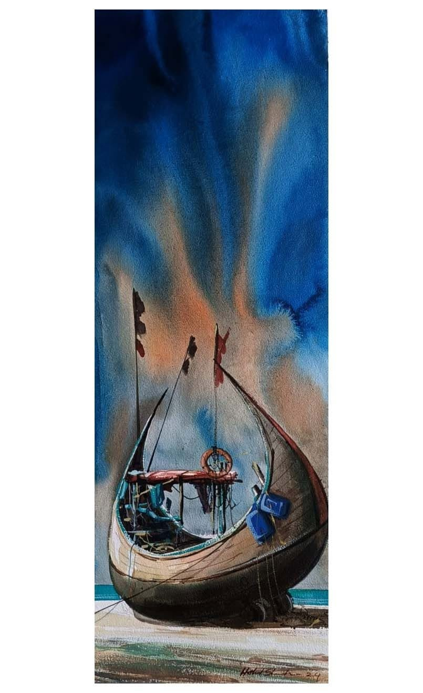
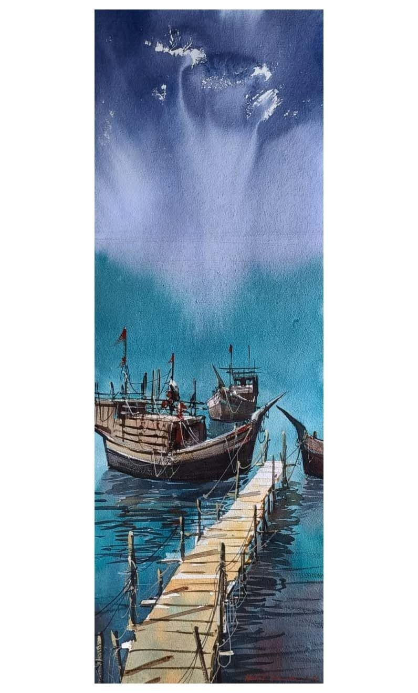
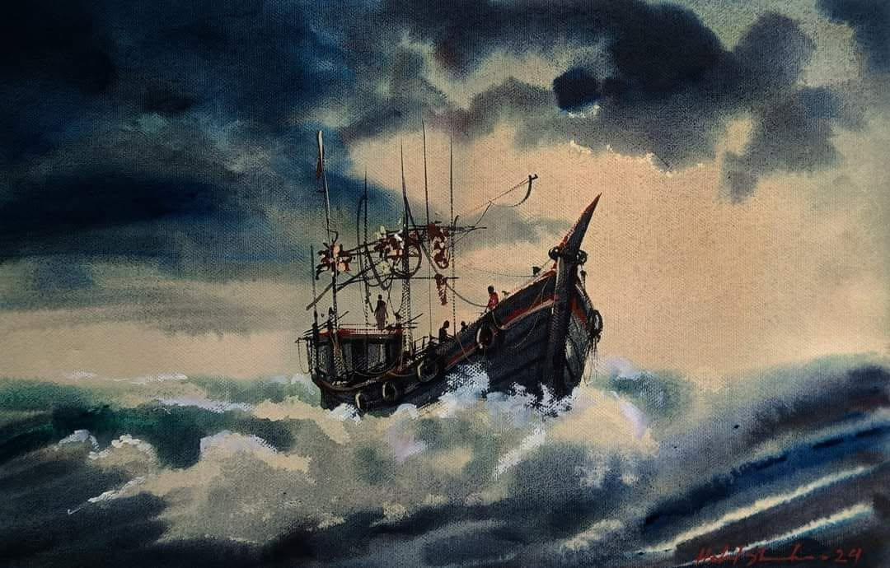
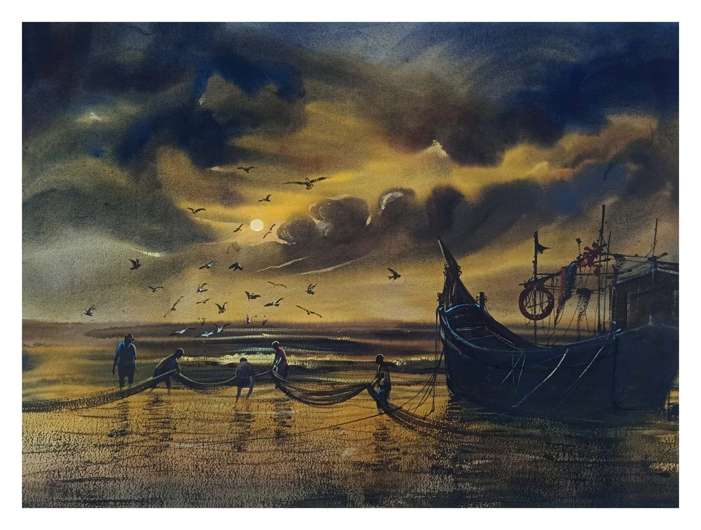
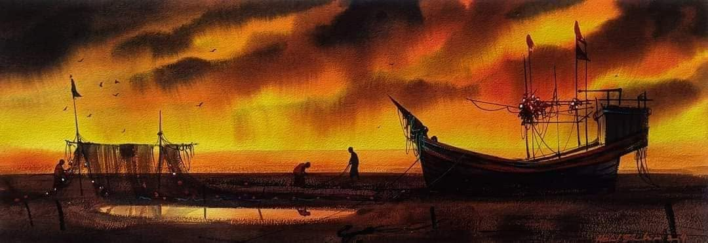
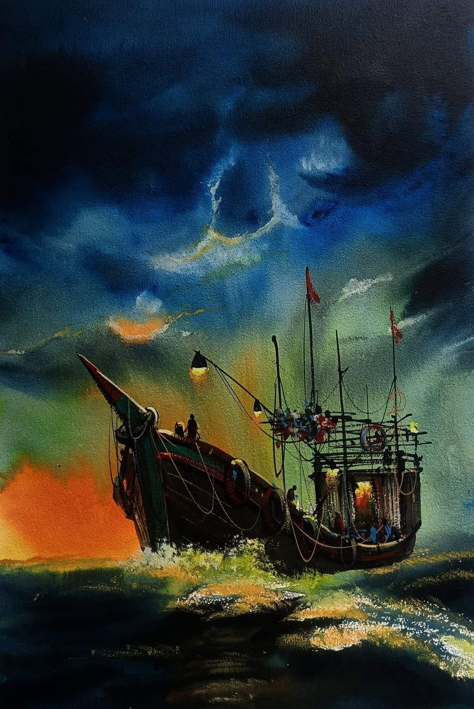
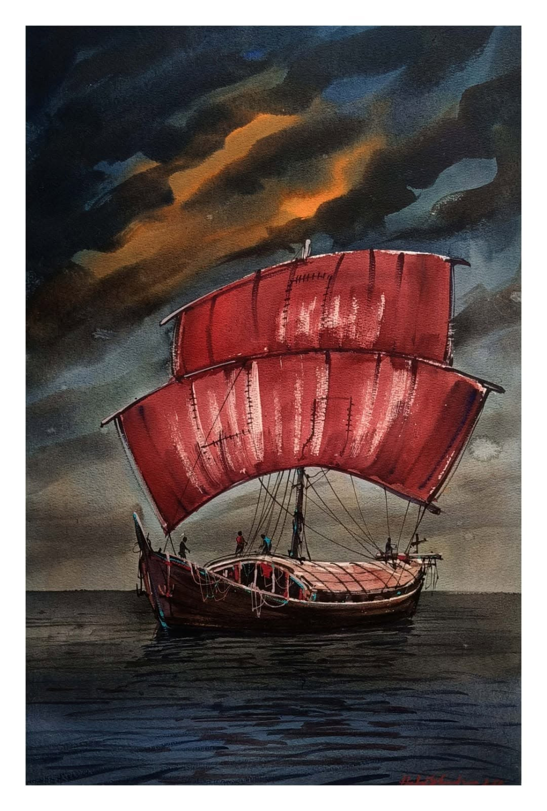

01
Homeward Voyage
Sweeping panoramic washes of pale sunlight and delicate river reflections capture traditional country boats navigating calm waters.
Artist Profile & Portfolio 2026
A contemporary visual art practice exploring river culture, rural settlements, agricultural delta landscapes, and ecological memory through translucent watercolour washes and atmospheric acrylic painting.
Dhaka · Bangladesh · International Practice

Practice
01 · About
Md Omar Faruque is a Bangladeshi contemporary visual artist and Fine Arts graduate from the University of Chittagong, working as an Assistant Programmer.
Working primarily in watercolour on paper and acrylic on canvas, Faruque's practice draws deeply from the rivers, boats, rural settlements, agricultural landscapes, and working communities of Bangladesh. His transparent washes, atmospheric colour handling, and economical brushwork transform fleeting natural moments into poetic visual narratives.
Through fluid layers of pigment and water, Faruque captures the transient spirit and resilient soul of deltaic ecology. The waterways are never mere scenic backdrops; they represent living lifelines of livelihood, shared heritage, and collective memory. The delicate balance between expansive sky, tranquil water, and the structural silhouettes of traditional wooden country boats allows quiet contemplation to sit alongside profound environmental sensitivity.
His academic training in fine arts at the University of Chittagong enriches his studio experimentation, establishing a rigorous conceptual bridge between traditional South Asian landscape aesthetics, contemporary painting techniques, and technical computing disciplines.
02 · Portfolio
Eight selected works across watercolour on paper and acrylic on canvas. Select any artwork to inspect in full resolution with detailed curation notes.
Sweeping panoramic washes of pale sunlight and delicate river reflections capture traditional country boats navigating calm waters.

Translucent washes of cerulean, grey, and ochre evoke quiet morning stillness along the riverline.

Luminous washes and swift calligraphic brushstrokes depict fishermen and moored vessels at daybreak.

Textural brushwork and moody earthen tones convey the presence of rural boats resting along tidal mudbanks.

Layered tones of emerald and ochre render thatched rural homes along the river bend.

An elongated panoramic study celebrating the vast horizontal expanse of the river horizon, glowing with amber washes and silhouetted rivercraft.

Deep ultramarine and indigo tones frame slender boat masts against the twilight waterways.

Delicate brushwork and layered washes illustrate a lone country boat cutting across rippling waters.
03 · Exhibitions & Fieldwork
International art fairs, national exhibitions, and intensive field art camps spanning 2013 to 2026 across Asia, North America, and Europe.
04 · Curriculum Vitae
A practice grounded in academic fine art qualifications from the University of Chittagong alongside technical and computing experience.
Faculty of Fine Arts, University of Chittagong, Bangladesh
Advanced studio training in drawing, painting, translucent wash techniques, and visual composition.
Faculty of Fine Arts, University of Chittagong, Bangladesh
Comprehensive foundational education in fine arts, art history, classical drawing, and print media.
Technical & Computing Practice · Bangladesh
Handles programming, technical systems, computing infrastructure, software support, and digital asset organization with meticulous analytical rigor.
Studio Practice & International Presentations
Active international and national studio practice spanning 5 solo shows, 22 group exhibitions, and numerous diplomatic cross-cultural exhibitions.
National & International Art Residencies
Participated in high-level art camps in Manikganj, Gazipur, Narail, Cox's Bazar, New York, and Dhaka, collaborating with fellow master artists.
Dedicated documentation and artistic interpretation of the lives, boats, and tidal rhythms of rural delta communities across Bangladesh.
Mastery of transparent wash layering on handmade paper, complemented by bold textural acrylic works on stretched canvas.
Bringing systemic thinking, algorithmic precision, and digital data management from programming into large-scale creative workflows.
Institutional Alma Mater
Alma mater for BFA and MFA in Fine Arts, representing years of rigorous academic and artistic development in Bangladesh.
05 · Capabilities
Comprehensive studio mastery paired with analytical computing and academic research capabilities.
06 · Contact
For exhibition invitations, artwork acquisitions, collaborative art camps, or academic research discussions, contact Md Omar Faruque directly.
Assistant Programmer · Contemporary Visual Artist